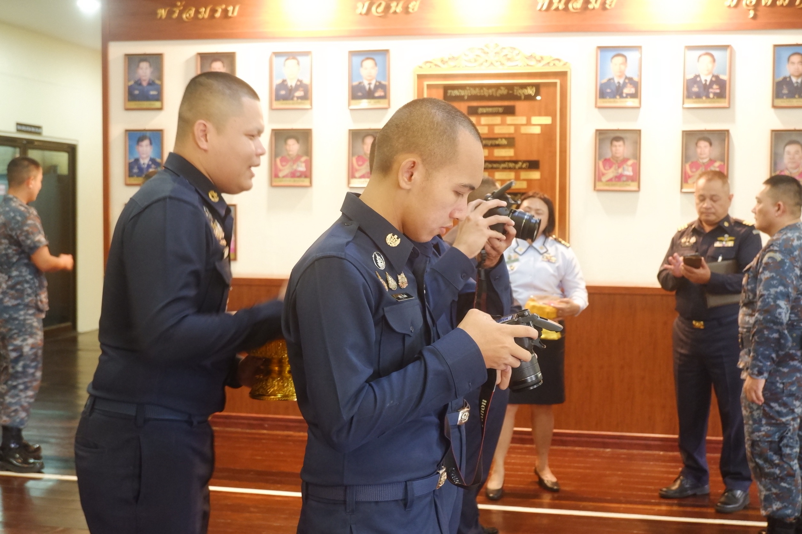
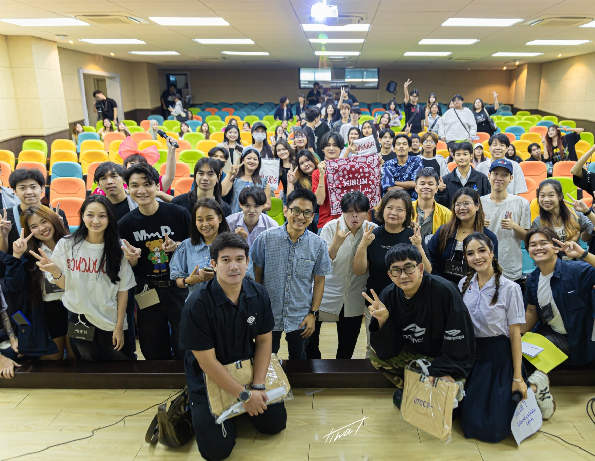
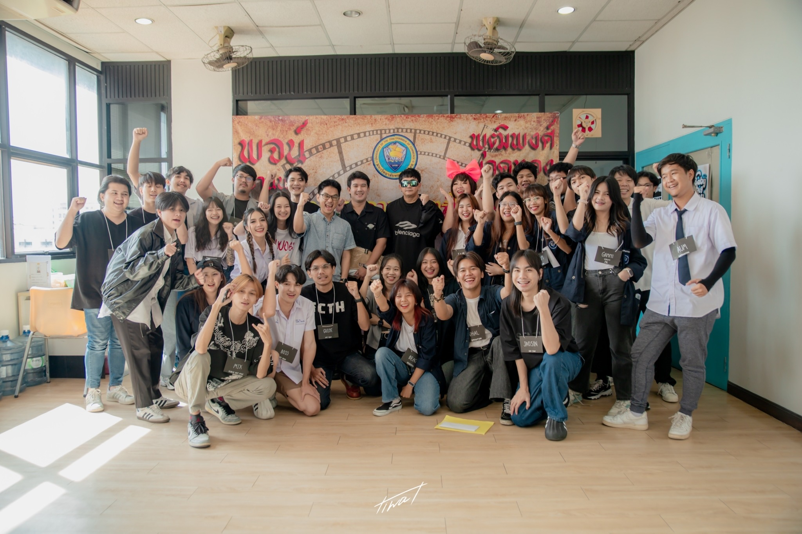
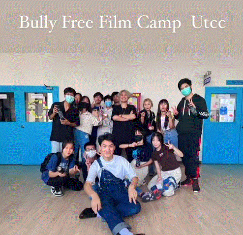

งานสัมมนาวิชาการ
มีส่วนร่วมในการวางแผนและจัดงานสัมมนาวิชาการ ดูแลการดำเนินงานภายในงาน และบันทึกภาพกิจกรรมอย่างเป็นระบบ
Bangkok, Thailand · 2026
I’m James Schrott, a photographer and editor capturing people, places, and the beautiful in-between.
Explore selected work ↓
SCROLL TO DISCOVER
02 — PHOTOGRAPHY
Portraits, places, and details worth remembering.
03 — VIDEO
คลิป YouTube, short films และ behind-the-scenes ที่เล่าเรื่องผ่านภาพเคลื่อนไหว
05 — UNIVERSITY LIFE
ผลงานและกิจกรรมด้านสื่อสร้างสรรค์ในมหาวิทยาลัย



มีส่วนร่วมในการวางแผนและจัดงานสัมมนาวิชาการ ดูแลการดำเนินงานภายในงาน และบันทึกภาพกิจกรรมอย่างเป็นระบบ
รับผิดชอบการเตรียมและดำเนินการสัมภาษณ์ผู้กำกับภาพยนตร์ชื่อดัง 2 ท่าน เพื่อถ่ายทอดมุมมองและประสบการณ์ด้านการทำงานภาพยนตร์
จัดกิจกรรมค่ายภาพยนตร์สำหรับนักเรียนมัธยมปลาย ถ่ายทอดพื้นฐานการเล่าเรื่อง การถ่ายทำ และกระบวนการผลิตภาพยนตร์เบื้องต้น
09 — CONTACT INFORMATION